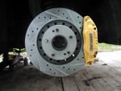
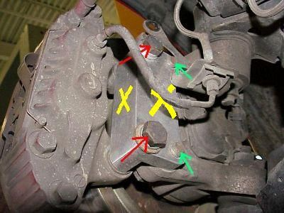
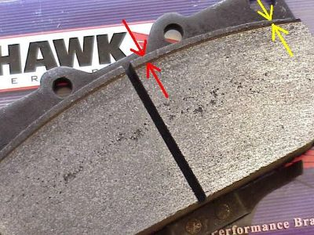
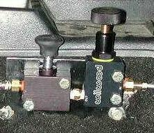

-
I wanted to start a Brake upgrade thread.
I know most of you have probably done the z32 front swap, but now there are more options since new kits have come about such as the 350Z track rotor swap and new light about the rear z32 calipers fitting, and now even swapping the z32 master cylinder
here are some links for that said equipment
300gt VR-4 Rotor adaptor kit, 12.5" rotor
http://ztuner.com/brakes.php


350Z Track edition adaptors for the z32 that could theoretically be used on the Z31
http://www.yugobernie.com/brake_adapter.html

Apparently this will happen to your pads due to the z32 caliper designed for a smaller diamter rotor…see image below

http://www.splparts.com/Parts/S13/Br…es/default.asp
After seeing how the kit mounts to the z32 caliper bracket, I would suppose we need to measure the thickness of the z31 caliper bracket for compatability
Here is the thread from z31.com about the rear calipers fitting
http://z31.com/board/read.php?id=71052&srf=nyet
PDM site for front line adaptors
http://www.pdm-racing.com/products/brakeslines.html
Jasons Page
http://www.redz31.com/pages/brakes.html
Here is a write up about the z32 master to a 240sx, I think it is easier to swap to the z31 than it is a a 240sx, rick88ss has said he has done it already
http://importnut.net/300zxbrakeswap.htm#MC
And here is the z32 caliper write up
http://www.princeton.edu/~asad/zbrakes/
G-E's compiled brake info
http://moredhel.net/3z/brakes.html
oh, and here is a link to ArizonaZcar for the line-lock for a parking brake if you do decide to use the z32 rear caliper or equivilent without the cable pull parking brake, Arizona Z Car also make a complete upgrade kit which could theoretically could be made to fit the Z31
http://www.arizonazcar.com/300zxbrakes.html Kit Page

And after doing some research, here is the push button Line lock for sale separately
http://www.spidertrax.com/s.nl/sc.2/…it.A/id.620/.f ~$35.00
AP Racing makes 3 kits for the Z32 which theoretically could be made to fit the Z31
http://www.brake-pros.com/specs/AP1145info.pdf 14.5" rotor= ~$2800
http://www.brake-pros.com/specs/AP1100info.pdf 13.5" rotor = ~$2800
http://www.brake-pros.com/specs/30-1100info.pdf 13" rotor = ~$1700
Rear Z32 caliper upgrade
well I slapped them on today…the centerline of the caliper and rotor match perfectly.
The only problem is that the rotor is a tad too small, you can just barely make this out in this shot(i know crappy cameraphone)
the dark orange band is where the stock pad stops, this picture shows how much higher the z32 pad rides above that line where the screwdriver is pointing
The difference on the bottom of the pad(closer to center of rotor) is that it rides about 3mm higher than the stock pad. and at the top of the rotor(farthest from the center) is about 2.5mm above the rotor.
that means something like this might happen
I say go for it as the weight savings is massive…only downside to this mod is that you loose your mechanical parking brake
Jason, I don't have the time to do a full write up, but maybe we could do a jont effort to preserve an archive of this info for ourselves on one page incase any of these links go down. I will be trying most of this stuff on my 89, I might not go with the Track rotors just because I think it's overkill, I personally don't think they are necessary unless you are going all out track car, or you're into the bling
I'll be adding info once I get my brakes(just got them off ebay for $190 front and rear z32 calipers) trying to fit the rears to the vented rear rotors and whatnot
Please add your input to make this a great Brake Upgrade Thread!used to have one of the first high horsepower NA to turbo cam'd 7000rpm pavement pounding z31's....now in process of building an LQ9 LS1 6.0L Z31 with all the goodies -
cool, will do with pics when they come in
the z32 rear rotors, if I remember correctly, won't work with the z31 rear due to the z32 rotor having an internal drum for a parking brake
I have been proven wrong before, maybe when I buy my new rotors, I'll compare them at a brake shop or parts store with the z32 style
oh, and here is a link to ArizonaZcar for the line-lock for a parking brake
http://www.arizonazcar.com/300zxbrakes.html
used to have one of the first high horsepower NA to turbo cam'd 7000rpm pavement pounding z31's....now in process of building an LQ9 LS1 6.0L Z31 with all the goodies -
you are correctthe z32 rear rotors, if I remember correctly, won't work with the z31 rear due to the z32 rotor having an internal drum for a parking brake
also for the sake of knowing, q45 front calipers are almost the same as 87T+ z31 calipers, the z32 and skyline gt-r and some gts-t all the way back to r32 are the same give or take
check my brakes page http://moredhel.net/3z/brakes.html for rotor info -
also note that the 87 master cylinder is 15/16" .... if you compare that to the 1" or 1-1/16" of the 240sx & z32… that will give you an idea of caliper flow and how stiff the pedal will feel (assuming everything else stays the same) -
Thanks Ken. Can I use 87-89 rear vented rotors on 84 rear control arms/hubs?
Do you know if the z32 rear rotor would work? -
The only thing i know 100% is what I postedMikeZ wrote: Thanks Ken. Can I use 87-89 rear vented rotors on 84 rear control arms/hubs?
Do you know if the z32 rear rotor would work?
but to better answer your question I need to know if you have 4 lug or 5 lug
if 4 lug, then no…possibly if you got the rotors drilled for 4 lug
if 5 lug, then I'd tenatively say yes, the caliper set-up never changed in the rear, so offset and distance to center "should" be equal.
the key word is "should" because I do not know for 100%
as far as the z32 rotor, I'd say no because they have an integral drum parking brake. I have been proven wrong before. Maybe someone here wants to chime in that has some z32 rotors laying around can send me measurments used to have one of the first high horsepower NA to turbo cam'd 7000rpm pavement pounding z31's....now in process of building an LQ9 LS1 6.0L Z31 with all the goodies
used to have one of the first high horsepower NA to turbo cam'd 7000rpm pavement pounding z31's....now in process of building an LQ9 LS1 6.0L Z31 with all the goodies -
[quote]Ken in AZ wrote:THe actual caliper mounting position, bracket, and caliper itself are different for the 87-89 rears. He would need the 87-89 rear control arm to put on the 87-89 rear vented rotors with 87-89 rear Z31 calipers, but it would be interesting to find out if the spacing of the Z32 caliper will 'allow' fitment of the 87-89 rear rotor on an 84-86 hub/control arm.Originally posted by MikeZ -
I have, laying in my garage a set of 86na rear control arms w/hubs and a set of 87na rear controll arms with hubs/rotors/calipers.Jason84NA2T wrote: … but it would be interesting to find out if the spacing of the Z32 caliper will 'allow' fitment of the 87-89 rear rotor on an 84-86 hub/control arm.
I fit the 87 vented rotors on the 86 hubs and they bottom out against the bolts that hold on the dust shield. I can take some comparison pics, the 87-89
control arm has that extra 10mm at the hub.
84 AE/Shiro #683/Shiro #820/84 Turbo -
That makes perfect sense, the hat height is probably somewhere close to 10MM greater to make up for the 10mm longer hub/axle stub. So unless you could remove the stone shield and have clearance, as well as find a way to center the Z32 caliper on the rotor, I think it's safe to say you can't use the 87-89 rear brake rotors without 87-89 rear control arms. For those reasons, right?Z_Karma wrote: I have, laying in my garage a set of 86na rear control arms w/hubs and a set of 87na rear controll arms with hubs/rotors/calipers.
I fit the 87 vented rotors on the 86 hubs and they bottom out against the bolts that hold on the dust shield. I can take some comparison pics, the 87-89
control arm has that extra 10mm at the hub. -
Hi guys, new poster here. This is the 350z brake rotor kit from SPL on my 87 turbo. The calipers required 7.5mm spacing to center. The brackets are for an S14. The Z32 brackets would require less spacing. The brake pads are above the edge of the rotor by about 3mm.
Please forgive the gold calipers, my inner ricer couldn't resist.
-
just wondering on all sites it explains you need a spacer to mount the z32 calipers on the 87-89 car but is that with the na or turbo hub? or does it make any diff? thanks in advance sorry if it has been answered and i accidently didn't seeStocker 87 na z31 and a slightly modded 90 240sx -
the non-turbo hubs have a wider outer diameter and shorter studs… both of these go against using any slip-on rotors.... that's the only reason really -
Re: driveshaft mounted parking brake
this is the brico of my z31 to place the brakes to him of z32 but being changed the front disc by one of evoVIII of 320mm.X32mm.
sorry for my bad inglish ops:
ops:
and this is the difference of diametro of those of z32:
and this is the difference of thicknesses of z32:
and asi as they were
and the braking regulator the e placed in an accessible site but hidden wing time
and this is another one inventillo to be able to place the clamps of z32 atras since those of series it goes with cable and this with I eliminate and asi to be able to use the hand brake
-
I'm just curious as to who is getting brake fade using TT front brakes & 88 rear vented brakes???? I track & autocross my car with the TT fronts & 88 rears with NO brake fade whatsoever. My car rips down speed phenominally as well. 20 minute sessions on a 3.5 mile road course with 28 corners in the Vegas heat. No brake fade. I guess I would have to drive someones car with larger rotors (like 3000GT) and/or 350z front calipers and/or TT rear calipers to see if there is a difference. I don't even use the TT master cylinder. Just my stock 86t MC. Just curious who is experiencing brake fade. -
I use Motul, motorcycle brake/clutch fluid. Expensive but worth it.Kennedy wrote:
Maybe those who are experiencing brake fade uses some crappy DOT4 brake fluid..
15-20min in racetrack with my Z32TT front brakes with DOT5.1 fluid is no problem.
I use my stock MC too.

Copyright © 2006–. All rights reserved. Privacy Policy